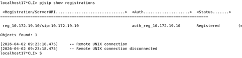

Expertise ToIP : XiVO.
Architecture Call Manager / Protocoles Voix sur IP1. Contexte du Projet
Dans le cadre de ma formation, j'ai pris en main le déploiement d'une infrastructure de téléphonie sur IP (ToIP) complète. L'enjeu était de configurer un serveur XiVO (IPBX basé sur Asterisk) pour répondre aux besoins d'une entreprise moderne. J'ai administré le serveur vm-iutcl-xivoc-etudiant-17 sur l'adresse IP 10.172.20.27.
2. Travail Fourni
A. Gestion des Identités SIP
J'ai commencé par la création des comptes utilisateurs dans l'annuaire XiVO. J'ai configuré les lignes SIP en attribuant des numéros courts internes et des numéros SDA. Pour chaque ligne, j'ai défini des contextes d'appels spécifiques afin de filtrer les droits d'accès.

B. Interconnexion : Trunk SIP
J'ai mis en place un Trunk SIP pour l'interconnexion. J'ai configuré les routes sortantes avec une gestion de préfixes (ex: préfixe "0") et les routes entrantes pour rediriger les appels externes. J'ai validé la signalisation via la console Asterisk.

3. Difficultés Rencontrées
J'ai rencontré des difficultés liées au NAT, provoquant des appels sans audio. J'ai résolu cela en ajustant les paramètres IP dans la configuration d'Asterisk. Le provisionnement automatique des postes a également nécessité plusieurs tests pour être opérationnel.
4. Résultat Final
L'infrastructure est totalement opérationnelle. J'ai analysé les trames avec Wireshark pour confirmer le bon établissement des sessions. Cette manipulation a validé ma capacité à gérer un système de téléphonie critique.